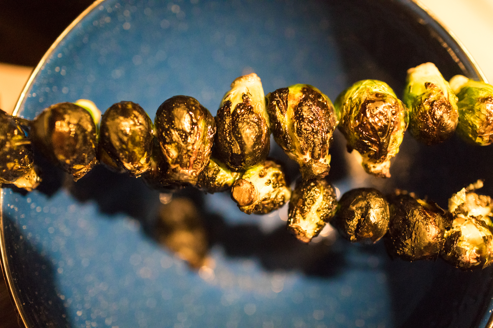

Roasted Brussels Sprouts

Overview
- Serves: 6 people
- Prep Time: 10 mins
- Cook Time: 20 mins
Many of us have bad memories of forcing Brussels sprouts down our throats. If therapy did not help you recover from the trauma, this recipe surely will.
Ingredients
- Brussels sprouts: One pound of whole, clean and trimmed Brussels sprouts
- Bacon: Four slices, cut into 1/2-inch pieces
- Salt: 1/2 teaspoon
- Pepper: 1/4 teaspoon of freshly ground black pepper
- Olive oil: 1/4 cup of extra-virgin olive oil
- Maple syrup: 3 tablespoons
Steps
- Gather all ingredients. Preheat the oven to 400 degrees F (200 degrees C). Line a rimmed baking sheet with aluminum
foil.
- Trim ends off Brussels sprouts and cut any large ones in half. Transfer to a large bowl.
- Add bacon, salt, and pepper to the Brussels spouts. Drizzle olive oil and maple syrup over top and toss until sprouts
are well coated.
- Transfer to the prepared baking sheet and spread in a single layer.
- Roast in the preheated oven until bacon is crispy and Brussels sprouts are caramelized, 20 to 30 minutes, stirring
halfway through.
- Serve warm and enjoy!
This recipe comes directly from allrecipes.com.